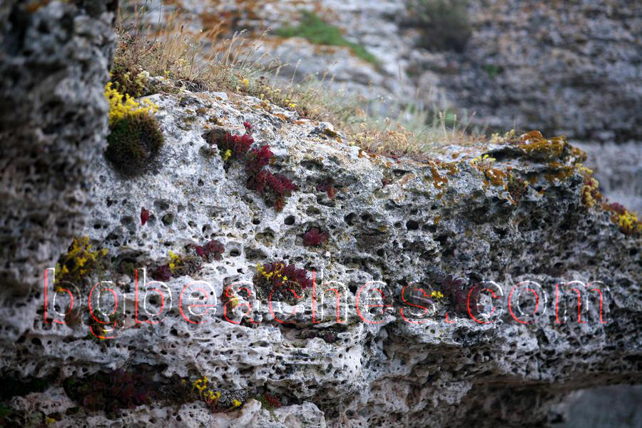

Flora at Kamen Bryag
About This Photo
This photo from Kamen Bryag shows flora. Every location on the Bulgarian Black Sea coast has unique characteristics and atmosphere. Kamen Bryag offers a specific experience with distinctive features of nature, architecture or everyday life.
Visual Context
What you see in this image represents typical conditions at Kamen Bryag. The photograph was taken during a visit to document the area, showing the characteristic features of this location. Understanding what different areas look like helps travelers make informed decisions about which Bulgarian beach destinations best match their preferences.
About Kamen Bryag
Kamen Bryag is a destination along Bulgaria's 378km Black Sea coastline, featuring sandy beach area with fine to medium sand. The area is particularly known for authentic Bulgarian coastal experience. Visitors to this location typically enjoy Black Sea waters, warm in summer (22-25°C), and the destination attracts beach lovers, families, and coastal tourists.
What to Expect When Visiting
When you visit Kamen Bryag, you'll find beach amenities available during summer season. The beach area maintains varies by season, which significantly impacts the visitor experience. During peak summer months (July-August), expect warmer temperatures (28-32°C air, 23-25°C water) and higher visitor numbers. June and September offer similar weather with notably fewer crowds.
Nearby Attractions & Activities
Beyond the beach itself, the area around Kamen Bryag offers access to other Bulgarian Black Sea destinations. Many visitors combine beach time with exploration of nearby attractions, creating a well-rounded vacation experience. The Bulgarian Black Sea coast features diverse activities including water sports, coastal hiking, historical site visits, and traditional village exploration.
Photography & Best Times
For photographers visiting Kamen Bryag, the best light occurs during various times of day depending on desired atmosphere. The beach areas are typically least crowded before 10 AM and after 5 PM. Consider visiting during different times of day to experience varying atmospheres and lighting conditions.